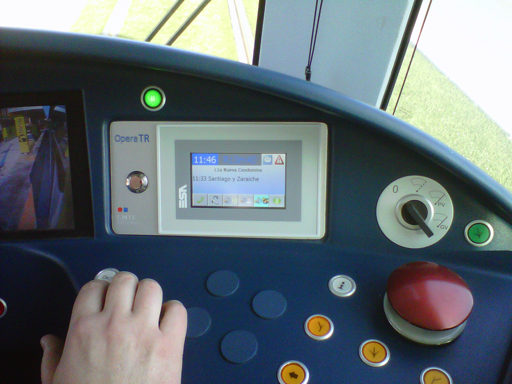

Operational Data Center Architecture
- Tier-aligned design (Uptime Institute)
- Resource sizing & scalability
- Active-active redundancy
- Functional domain segmentation

Comprehensive IT/OT architecture design for critical railway systems
Railway Specialization
ADDEREIN specializes in the comprehensive design of IP-based railway architectures, structured across functional IT/OT domains and cross-domain core systems.
Capabilities